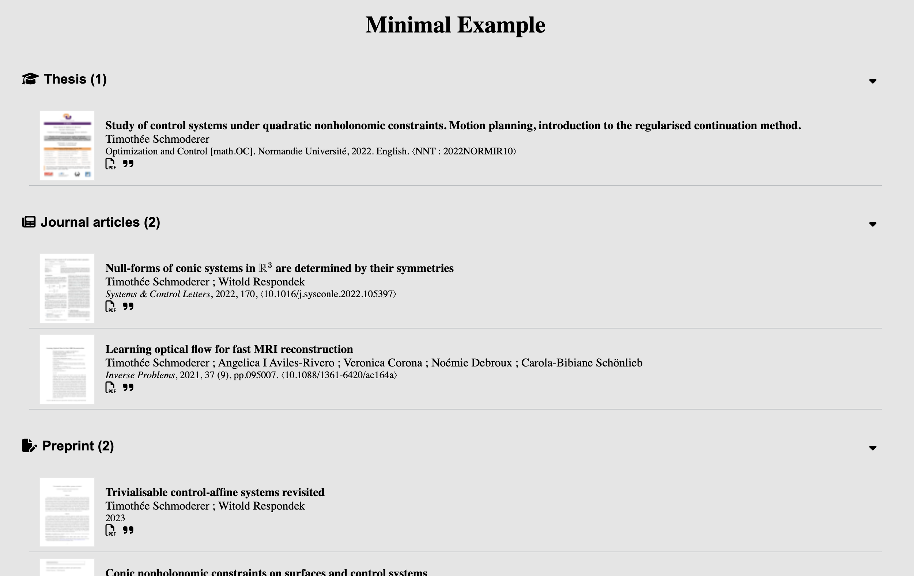
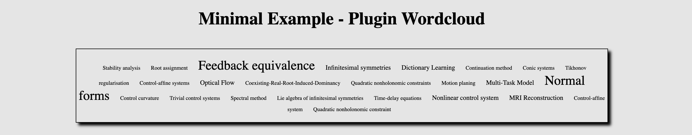
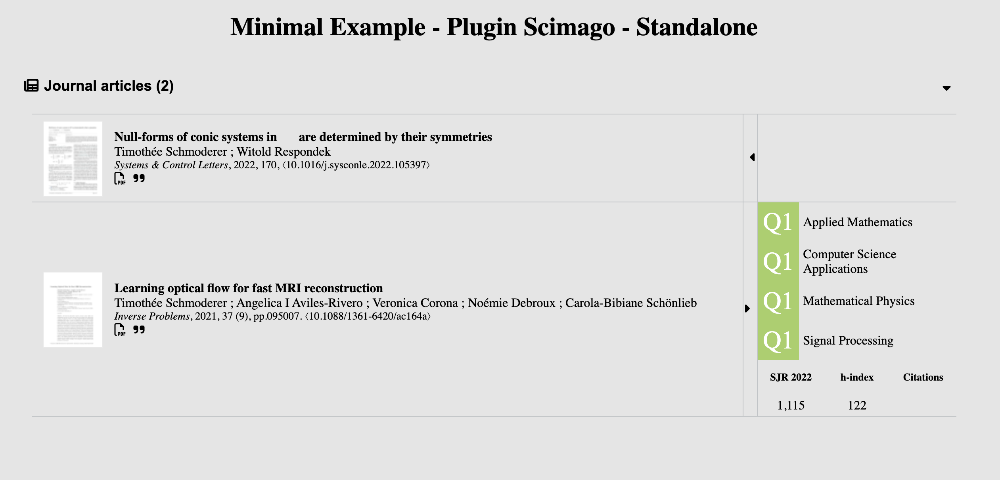
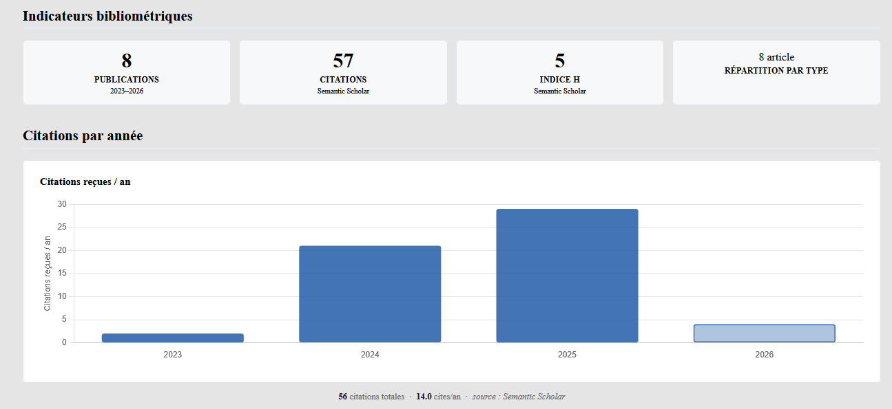

This repository contains a JavaScript module that simplifies the integration of an author's HAL bibliography into a website. The code uses the HAL API to retrieve data and displays it in a style similar to the HAL CV. The package also provides several plugins to enhance the displayed information.
🌍 Languages: 🇬🇧 English 🇫🇷 Français
To integrate a HAL bibliography into a website, you will need the researcher's HAL unique identifier: idHal.
Download the latest release and extract the hal.js and hal.css files from the "dist.zip" archive.
Insert the following HTML node where you want to display the bibliography:
<div id="hal-bibliography-integrator"></div>
In the <head> of your page, add the following code to load the CSS resources:
<link rel="stylesheet" href="https://cdnjs.cloudflare.com/ajax/libs/font-awesome/6.3.0/css/all.min.css" integrity="sha512-SzlrxWUlpfuzQ+pcUCosxcglQRNAq/DZjVsC0lE40xsADsfeQoEypE+enwcOiGjk/bSuGGKHEyjSoQ1zVisanQ==" crossorigin="anonymous" referrerpolicy="no-referrer" />
<link rel="stylesheet" href="./path/to/hal.css">
(Optional) If some article titles contain mathematical expressions, you can ensure proper rendering
by adding the following code to the <head> of your page:
<script>
MathJax = {
tex: {
inlineMath: [['$', '$'], ['\\(', '\\)']],
processEscapes: true,
tags: "all"
},
svg: {
fontCache: 'global'
},
loader: {
load: ['[tex]/html']
}
};
</script>
<script src="https://cdnjs.cloudflare.com/ajax/libs/mathjax/3.2.2/es5/tex-svg.min.js" integrity="sha512-EtUjpk/hY3NXp8vfrPUJWhepp1ZbgSI10DKPzfd+3J/p2Wo89JRBvQIdk3Q83qAEhKOiFOsYfhqFnOEv23L+dA==" crossorigin="anonymous" referrerpolicy="no-referrer"></script>
At the end of the <head> section of your HTML page, add the following code and configure
the target idHal and the list of desired publication types (see the supported types list
below). The debug key enables additional logs in the browser console.
<script type="text/javascript">
const hal_integrator_config = {
// Custom idHal
"id": "timothee-schmoderer",
// List of desired publication types
"typeList": ["THESE", "ART", "UNDEFINED", "COMM"],
// (Optional: manual trigger)
"doit": false,
// (Optional: debug mode)
"debug": false,
}
</script>
Note: The different publication sections are displayed in the order defined in the typeList array.
At the end of the <body> of your HTML page, add the following code to load the script:
<script type="text/javascript" src="./path/to/hal.js"></script>

The table below provides the keywords to use in the typeList key to retrieve the full list of publications of a given type. The last column indicates whether the type is supported by the JavaScript module:
| Keyword | Description 🇬🇧 | Description 🇫🇷 | Supported Pris en charge |
Icon |
|---|---|---|---|---|
| ART | Journal article | Article de journal | ✔️ | |
| COMM | Conference paper | Communication dans un congrès | ✔️ | |
| COUV | Book chapter | Chapitre de livre | ✔️ | |
| THESE | PhD thesis | Thèse | ✔️ | |
| OUV | Book | Livre | ✔️ | |
| UNDEFINED | Preprint | Preprint, document de travail | ✔️ | |
| REPORT | ? | ? | ❌ | |
| OTHER | ? | ? | ❌ | |
| MEM | ? | ? | ❌ | |
| IMG | Image | Image | ❌ | |
| POSTER | Conference poster | Poster de conférence | ✔️ | |
| ISSUE | ? | ? | ❌ | |
| PROCEEDINGS | Proceedings | Proceedings | ✔️ | |
| HDR | Habilitation à diriger des recherche | ❌ | ||
| NOTICE | ? | ? | ❌ | |
| PATENT | Patent | Brevet | ✔️ | |
| BLOG | ? | ? | ❌ | |
| REPORT_LABO | ? | ? | ❌ | |
| VIDEO | Video | Vidéo | ❌ | |
| REPORT_MAST | ? | ? | ❌ | |
| LECTURE | Cours | ✔️ | ||
| REPORT_LPRO | ? | ? | ❌ | |
| REPORT_LICE | ? | ? | ❌ | |
| TRAD | ? | ? | ❌ | |
| SOFTWARE | Software | Logiciel | ✔️ | |
| CREPORT | ? | ? | ❌ | |
| PRESCONF | ? | ? | ❌ | |
| REPORT_DOCT | ? | ? | ❌ | |
| REPORT_ETAB | ? | ? | ❌ | |
| MAP | ? | ? | ❌ | |
| SON | ? | ? | ❌ | |
| REPORT_FORM | ? | ? | ❌ | |
| REPORT_GMAST | ? | ? | ❌ | |
| OTHERREPORT | ? | ? | ❌ | |
| NOTE | ? | ? | ❌ | |
| SYNTHESE | ? | ? | ❌ | |
| REPORT_FPROJ | ? | ? | ❌ | |
| REPORT_GLICE | ? | ? | ❌ | |
| REPACT | ? | ? | ❌ | |
| MEMLIC | ? | ? | ❌ | |
| REPORT_RFOINT | ? | ? | ❌ | |
| REPORT_COOR | ? | ? | ❌ | |
| ETABTHESE | ? | ? | ❌ | |
| REPORT_RETABINT | ? | ? | ❌ | |
| MANUAL | ? | ? | ❌ | |
| DOUV | ? | ? | ❌ |
To add support for a new publication type, follow these steps:
{
"TYPE": {
"icon": "icon class",
"title_en": "section title for this publication type"
}
}
Make sure to replace "TYPE" with the keyword corresponding to the new publication type. Specify the icon class using an icon provided by Font Awesome. Also provide the section title in English for this publication type.
Ce package propose l'ajout de plugins pour étendre les fonctionnalités du module. L'exécution des plugins est automatique a partir du moment ou les scripts hal.js et hal-[plugin-name].js sont présents. Les plugins sont configurables a travers le dictionaire contenu dans la clé "plugins" de la variable hal_integrator_config :
<script type="text/javascript">
const hal_integrator_config = {
...
"plugins": {
"plugin-name": {},
}
}
</script>
Voir la documentation pour le détail des options de configuration de chaque plugin.
Le plugin wordcloud permet d'intégrer un nuage de mots-clés associés à un auteur. Les mots-clés sont extraits des publications affichées par le module principal. Ainsi, pour utiliser ce plugin, il est nécessaire de suivre la procédure décrite dans le tutoriel ci-dessus pour intégrer le module principal. Néanmoins, si vous souhaitez afficher uniquement le nuage de mots sans les publications, vous pouvez simplement ajouter le style suivant :
<style>
#hal-bibliography-integrator {display: none;}
<style>

Pour intégrer le nuage de mots-clés de l'auteur dans votre page, suivez les étapes suivantes :
<div id="hal-wordcloud-integrator"></div>
<head> de votre page, ajoutez le lien vers la feuille de styles spécifique au
nuage de mots-clés. Assurez-vous de spécifier le chemin d'accès correct vers le fichier
hal-wordcloud.css :<link rel="stylesheet" href="./path/to/hal-wordcloud.css">
<body> de votre page, ajoutez le script suivant pour charger le
fichier hal-wordcloud.js. Assurez-vous également de spécifier le chemin d'accès correct vers le
fichier :<script type="text/javascript" src="./path/to/hal-wordcloud.js"></script>
Le plugin artscore (article score) ajoute des métriques aux publications de type ART (articles de journaux). Le plugin récupère des métriques du journal (SJR, quartile, h-index, CiteScore) ainsi que le nombre de citations d'après semantic scholar.

Pour activer le plugin, veuillez suivre les étapes suivantes :
<head> de votre page, ajoutez le lien vers la feuille de styles : <link rel="stylesheet" href="./path/to/hal-artscore.css">
<script type="text/javascript">
const hal_integrator_config = {
...
"plugins": {
"artscore": {
"scopus": {
"apiKey": "your-api-key",
}
}
}
}
</script>
<body>, ajoutez le lien vers le script du plugin : <script type="text/javascript" src="./path/to/hal-artscore.js"></script>
Warnings:
Le plugin charts génère des visualisations scientifiques à partir des publications HAL d'un auteur. Il affiche :

Pour activer le plugin, veuillez suivre les étapes suivantes :
Assurez-vous d'avoir ajouté le module principal hal.js à votre site web en suivant les instructions du tutoriel.
À l'endroit où vous souhaitez afficher les graphiques, insérez le nœud HTML suivant :
<div id="hal-charts-integrator"></div>
<head> de votre page, ajoutez le lien vers la feuille de styles :<link rel="stylesheet" href="./path/to/hal-charts.css">
hal_integrator_config. La configuration minimale ne requiert aucune clé :
<script type="text/javascript">
const hal_integrator_config = {
// ...
"plugins": {
"charts": {}
}
}
</script>
<body>, ajoutez le lien vers le script du plugin :<script type="text/javascript" src="./path/to/hal-charts.js"></script>
Toutes les options sont facultatives.
<script type="text/javascript">
const hal_integrator_config = {
// ...
"plugins": {
"charts": {
// Graphiques à afficher (tous par défaut)
// Clés disponibles : "metrics", "thematiques", "domaines", "citations"
"show": ["metrics", "citations"],
// Nombre maximum de catégories dans les graphiques thématiques/domaines
"maxCategories": 6,
// Source des citations : Semantic Scholar (recommandé, gratuit, CORS natif)
"semanticScholar": {
"authorId": "2109238827", // semanticscholar.org/author/Nom/2109238827
"apiKey": "votre-clé" // optionnel — x8 plus rapide (1 req/s → 10 req/s)
},
// Source des citations : Scopus (fallback si Semantic Scholar échoue)
"scopus": {
"apiKey": "votre-clé-elsevier", // dev.elsevier.com
"authorId": "57346250300" // dans l'URL scopus.com/authid/…
},
// Renommage manuel des thématiques détectées automatiquement
"renameThematiques": {
"deep learning": "Apprentissage profond",
"mri": "IRM"
},
// Renommage manuel des domaines HAL
"renameDomaines": {
"spi.signal": "Traitement du signal",
"sdv.can": "Oncologie"
}
}
}
}
</script>
Le plugin tente d'obtenir les citations dans l'ordre suivant :
| Priorité | Source | Clé requise | Vitesse |
|---|---|---|---|
| 1 | Semantic Scholar (par authorId) |
non | ~1 req/s sans clé, ~10 req/s avec clé |
| 2 | Semantic Scholar (par nom HAL) | non | idem, résultats moins fiables |
| 3 | Semantic Scholar (par DOI HAL) | non | idem, par lot POST |
| 4 | Scopus | apiKey + authorId |
selon quota Elsevier |
Pour trouver votre Semantic Scholar Author ID, rendez-vous sur semanticscholar.org, cherchez votre profil et relevez le numéro en fin d'URL :
https://www.semanticscholar.org/author/Prénom-Nom/2109238827
^^^^^^^^^^
Pour demander une clé API Semantic Scholar (gratuite, augmente la limite de 1 à 10 req/s) : semanticscholar.org/product/api
Avertissements :
authorId Semantic Scholar configuré, le plugin recherche l'auteur par son identifiant HAL. Les
résultats peuvent être incorrects si le nom est ambigu. npm -v
node -v
node install